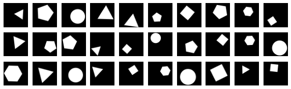

Randomly generate center, number of angles, spin angle, scaling
Draw and fill
Circle, 3-8
import pickle
import numpy as np
import pandas as pd
from functools import partial
import drawSvg as draw
import matplotlib.pyplot as plt
from imageio import imread
from tensorflow import keras
# 0 - circle
shapes = {0: {'origin': partial(np.random.uniform, low=-20, high=20, size=2),
'scale': partial(np.random.uniform, low=10, high=20, size=1)},
**{N: {'origin': partial(np.random.uniform, low=-20, high=20, size=2),
'spin': partial(np.random.uniform, low=0, high=2 * np.pi, size=1),
'scale': partial(np.random.uniform, low=10, high=20, size=1)} for N in range(3, 7)}}
def generator(shapes, dpi=50):
while True:
N = np.random.choice(list(shapes.keys()))
if N == 0:
scale = shapes[N]['scale']()[0]
origin = shapes[N]['origin']()
if np.all(np.abs(np.array(
[origin[0] - scale, origin[0] + scale,
origin[1] - scale, origin[1] + scale])) <= int(dpi / 2)):
d = draw.Drawing(dpi, dpi, origin='center', displayInline=False)
d.append(draw.Circle(*origin, scale, fill='black'))
yield d, N
else:
spin = shapes[N]['spin']()[0]
scale = shapes[N]['scale']()[0]
origin = shapes[N]['origin']()
rad = [scale * np.exp((2 * np.pi / N * n + spin) * 1j) for n in range(N)]
coord = [i for c in [[origin[0] + c.real, origin[1] + c.imag] for c in rad] for i in c]
# Draw an irregular polygon
if np.all(np.abs(np.array(coord)) <= int(dpi / 2)):
d = draw.Drawing(dpi, dpi, origin='center', displayInline=False)
d.append(draw.Lines(*coord, close=True, fill='black'))
yield d, N
gen = generator(shapes)
plt.figure(figsize=(10, 3))
for i in range(30):
d, N = next(gen)
d.savePng('tmp.png')
plt.subplot(3, 10, i + 1)
plt.imshow(imread('tmp.png')[:, :, 3], cmap='gray')
plt.axis('off')
plt.show()

Training examples¶
def batch_gen(batch_sice=32, dim=50, gen=generator(shapes)):
while True:
X = np.zeros((batch_sice, dim, dim, 1))
y = np.zeros((batch_sice))
for i in range(batch_sice):
d, N = next(gen)
# Fix class label
y[i] = 0 if N == 0 else N - 2
d.savePng('tmp.png')
# Rescale
X[i] = imread('tmp.png')[:, :, [3]] / 255
yield X, y
gen = batch_gen()
def get_model(hidden):
model = keras.models.Sequential()
model.add(keras.layers.Flatten(input_shape=[50, 50, 1]))
model.add(keras.layers.Dense(hidden, activation="relu"))
model.add(keras.layers.Dense(hidden, activation="relu"))
model.add(keras.layers.Dense(6, activation="softmax"))
model.compile(loss="sparse_categorical_crossentropy",
optimizer="sgd",
metrics=["accuracy"])
return model
model = get_model(100)
loss = model.fit(gen, epochs=20, steps_per_epoch=100)
pd.DataFrame(loss.history).plot()
Epoch 1/20
100/100 [==============================] - 17s 173ms/step - loss: 1.6635 - accuracy: 0.2209
Epoch 2/20
100/100 [==============================] - 16s 161ms/step - loss: 1.5629 - accuracy: 0.2887
Epoch 3/20
100/100 [==============================] - 16s 161ms/step - loss: 1.5133 - accuracy: 0.3388
Epoch 4/20
100/100 [==============================] - 17s 174ms/step - loss: 1.4919 - accuracy: 0.3388
Epoch 5/20
100/100 [==============================] - 18s 182ms/step - loss: 1.4611 - accuracy: 0.3522
Epoch 6/20
100/100 [==============================] - 20s 197ms/step - loss: 1.4426 - accuracy: 0.3506
Epoch 7/20
100/100 [==============================] - 21s 211ms/step - loss: 1.4316 - accuracy: 0.3444
Epoch 8/20
100/100 [==============================] - 19s 193ms/step - loss: 1.4267 - accuracy: 0.3422
Epoch 9/20
100/100 [==============================] - 18s 178ms/step - loss: 1.4035 - accuracy: 0.3525
Epoch 10/20
100/100 [==============================] - 20s 203ms/step - loss: 1.3854 - accuracy: 0.3638
Epoch 11/20
100/100 [==============================] - 22s 219ms/step - loss: 1.3712 - accuracy: 0.3734
Epoch 12/20
100/100 [==============================] - 21s 209ms/step - loss: 1.3550 - accuracy: 0.3778
Epoch 13/20
100/100 [==============================] - 18s 181ms/step - loss: 1.3572 - accuracy: 0.3691
Epoch 14/20
100/100 [==============================] - 18s 178ms/step - loss: 1.3126 - accuracy: 0.3959
Epoch 15/20
100/100 [==============================] - 19s 185ms/step - loss: 1.3031 - accuracy: 0.4000
Epoch 16/20
100/100 [==============================] - 18s 181ms/step - loss: 1.2997 - accuracy: 0.4006
Epoch 17/20
100/100 [==============================] - 18s 180ms/step - loss: 1.2894 - accuracy: 0.3994
Epoch 18/20
100/100 [==============================] - 18s 176ms/step - loss: 1.2805 - accuracy: 0.3969
Epoch 19/20
100/100 [==============================] - 19s 195ms/step - loss: 1.2570 - accuracy: 0.4109
Epoch 20/20
100/100 [==============================] - 18s 181ms/step - loss: 1.2308 - accuracy: 0.4331
<matplotlib.axes._subplots.AxesSubplot at 0x149b804d0>
def get_cnn_model():
model = keras.models.Sequential()
model.add(keras.layers.Conv2D(32, kernel_size=(3, 3), activation='relu', input_shape=[50, 50, 1]))
model.add(keras.layers.Conv2D(32, kernel_size=(3, 3), activation='relu'))
model.add(keras.layers.Flatten())
model.add(keras.layers.Dense(100, activation="relu"))
model.add(keras.layers.Dense(6, activation="softmax"))
model.compile(loss="sparse_categorical_crossentropy",
optimizer="adam",
metrics=["accuracy"])
return model
model = get_cnn_model()
loss = model.fit(gen, epochs=20, steps_per_epoch=100)
pd.DataFrame(loss.history).plot()
Epoch 1/20
100/100 [==============================] - 27s 268ms/step - loss: 1.5422 - accuracy: 0.2912
Epoch 2/20
100/100 [==============================] - 25s 246ms/step - loss: 1.3400 - accuracy: 0.4006
Epoch 3/20
100/100 [==============================] - 26s 260ms/step - loss: 1.2492 - accuracy: 0.4241
Epoch 4/20
100/100 [==============================] - 22s 217ms/step - loss: 1.1158 - accuracy: 0.4831
Epoch 5/20
100/100 [==============================] - 24s 240ms/step - loss: 1.0036 - accuracy: 0.5450
Epoch 6/20
100/100 [==============================] - 26s 259ms/step - loss: 0.8526 - accuracy: 0.6175
Epoch 7/20
100/100 [==============================] - 25s 246ms/step - loss: 0.7640 - accuracy: 0.6456
Epoch 8/20
100/100 [==============================] - 24s 236ms/step - loss: 0.6575 - accuracy: 0.7169
Epoch 9/20
100/100 [==============================] - 29s 288ms/step - loss: 0.5826 - accuracy: 0.7450
Epoch 10/20
100/100 [==============================] - 24s 241ms/step - loss: 0.4590 - accuracy: 0.8163
Epoch 11/20
100/100 [==============================] - 26s 260ms/step - loss: 0.4066 - accuracy: 0.8419
Epoch 12/20
100/100 [==============================] - 26s 258ms/step - loss: 0.3475 - accuracy: 0.8625
Epoch 13/20
100/100 [==============================] - 26s 261ms/step - loss: 0.3240 - accuracy: 0.8778
Epoch 14/20
100/100 [==============================] - 24s 242ms/step - loss: 0.2830 - accuracy: 0.8909
Epoch 15/20
100/100 [==============================] - 24s 239ms/step - loss: 0.2567 - accuracy: 0.8925
Epoch 16/20
100/100 [==============================] - 24s 240ms/step - loss: 0.2548 - accuracy: 0.9009
Epoch 17/20
100/100 [==============================] - 22s 224ms/step - loss: 0.2098 - accuracy: 0.9206
Epoch 18/20
100/100 [==============================] - 26s 256ms/step - loss: 0.2131 - accuracy: 0.9172
Epoch 19/20
100/100 [==============================] - 24s 237ms/step - loss: 0.1984 - accuracy: 0.9272
Epoch 20/20
100/100 [==============================] - 24s 240ms/step - loss: 0.1604 - accuracy: 0.9388
<matplotlib.axes._subplots.AxesSubplot at 0x14f2ef150>
Data is complex enough so that simple models will fail. CNN’s work nicely, but to get accuracy above 95 will be challenging.
Idea: to test best students just change random generator functions a bit for train and validation sets. For example circles could show up only on the left side in the train set, but on both sides in validation set.
Train data dump¶
def data_dump(size, dim=50, gen=generator(shapes)):
X = np.zeros((size, dim, dim))
y = np.zeros((size))
for i in range(size):
d, y[i] = next(gen)
d.savePng('tmp.png')
X[i] = imread('tmp.png')[:, :, 3]
return X, y
X, y = data_dump(10)
pickle.dump(open('flatland.pickle', 'wb'), (X, y))
pickle.load(open('flatland.pickle', 'rb'))
I can make automated submit later, before the course starts.